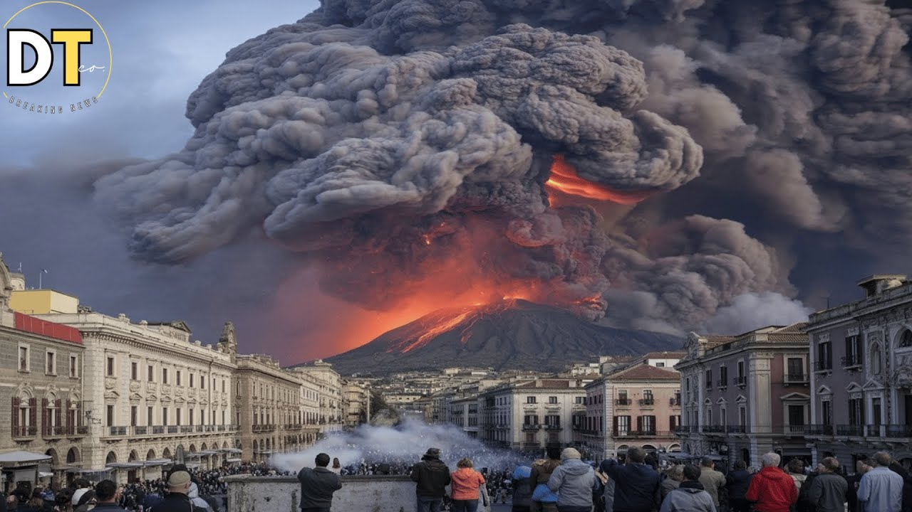

【意大利埃特纳火山今日大规模喷发！史诗级火山爆发震撼上演！】
Summary: Europe's highest active volcano, Mount Etna, suddenly erupted on June 2nd, covering Sicily in smoke and ash, triggering evacuations and aviation alerts.
摘要： 欧洲最高活火山埃特纳火山6月2日突然喷发，西西里岛被烟雾和火山灰笼罩，引发人员疏散和航空警报。

⏱️ Estimated Reading Time: 4 min
Suddenly and unexpectedly Europe's highest active volcano Mount Etna reawakened early on June 2nd with a powerful eruption that covered the Sicilian sky in smoke and ash.
欧洲最高活火山埃特纳火山6月2日凌晨突然意外苏醒，剧烈喷发将西西里岛的天空笼罩在烟雾和火山灰中。
Setting off alarms among authorities sending tourists fleeing in panic and prompting a red alert for aviation safety in a series of dramatic events.
当局拉响警报，游客惊慌逃离，一系列戏剧性事件促使航空安全红色警报发布。
Located on the Italian island of Sicily Mount Etna stirred back to life at 4:14 a.m local time with increasingly intense Strombolian eruptions that caught the attention of the Italian National Institute of Geophysics and Volcanology.
位于意大利西西里岛的埃特纳火山在当地时间凌晨4点14分苏醒，斯特龙博利式喷发愈发剧烈，引起意大利国家地球物理与火山学研究所的注意。
In a morning statement the institute confirmed that massive columns of smoke and ash from the volcano's southeastern crater were causing fine ash fallout in the Piano Vator area.
该研究所在早间声明中确认，火山东南侧火山口喷出的巨大烟灰柱导致Piano Vator地区出现细密火山灰沉降。
Later at 11:03 a.m local time 10:03 BST they officially announced that volcanic activity had grown stronger and almost continuous.
随后在当地时间11点03分（英国夏令时10点03分），研究所正式宣布火山活动已增强且几乎持续不断。
During these eruptions the sky turned into a war zone as ash lailli and volcanic bombs shot hundreds of meters above the volcano's summit.
喷发期间，火山灰和火山弹喷射至山顶数百米高空，天空如同战场。
The eruption severity did not go unnoticed by the Toulouse volcanic ash advisory center which reported that the ash cloud had reached about 21,000 ft posing a significant risk to global aviation safety.
图卢兹火山灰咨询中心注意到喷发的严重性，报告称火山灰云已升至约2.1万英尺高度，对全球航空安全构成重大威胁。
Consequently at 332 UTC the aviation color code was raised to red.
因此，在UTC时间3点32分，航空颜色代码被提升至红色。
However as conditions partially stabilized the alert level was revised back to orange at 6:39.
但随着情况部分稳定，警报级别在6点39分被下调为橙色。
Striking images of Etna's eruption quickly spread across social media capturing the dark plumes of smoke blanketing the mountainous region between Messina and Catania.
埃特纳火山喷发的震撼画面迅速在社交媒体传播，记录了墨色烟羽笼罩墨西拿和卡塔尼亚之间山区的场景。
The footage showed tourists frantically running down the slopes covering their ears from the deafening blasts while trying to find a safe path through the fearsome spectacle of rising lava fumes.
画面显示游客们疯狂跑下山坡，捂着耳朵躲避震耳欲聋的爆炸声，同时试图在骇人的上升熔岩烟雾中寻找安全路径。
Although local residents tried to remain calm the sheer power of the volcano once again left a deep mark on the collective memory of the community.
尽管当地居民试图保持冷静，但火山的巨大威力再次在社区集体记忆中留下深刻印记。
This latest eruption began with white smoke clouds rising from Etna's southeastern crater but the real warning signs came on the night of June 1st starting at 10 p.m UTC and peaking around 1:00 a.m on June 2nd.
这次最新喷发始于埃特纳东南火山口升起的白色烟云，但真正的预警信号出现在6月1日夜间，UTC时间晚上10点开始，6月2日凌晨1点左右达到高峰。
Seismic tremors detected at a depth of 2.8 kilometers below the volcano were an ominous indicator that a powerful eruption phase was imminent.
在火山下方2.8公里处检测到的地震震颤是不祥预兆，预示着强烈喷发阶段即将来临。
The intensity and duration of these volcanic vibrations confirmed that Etna was about to enter a major eruptive phase.
这些火山震动的强度和持续时间证实埃特纳即将进入主要喷发阶段。
This disaster serves as a reminder of the undying energy of this volcano in the heart of the Mediterranean which has been active for thousands of years.
这场灾难提醒人们地中海心脏地带这座火山的永恒能量，它已活跃数千年。
We extend our thoughts and prayers to all those affected by this event.
我们向所有受此事件影响的人们致以关切和祈祷。
If you'd like to stay updated on this and similar content don't forget to subscribe to our channel and turn on notifications.
若想持续获取此类内容更新，请订阅我们的频道并开启通知功能。
Stay safe.
注意安全。